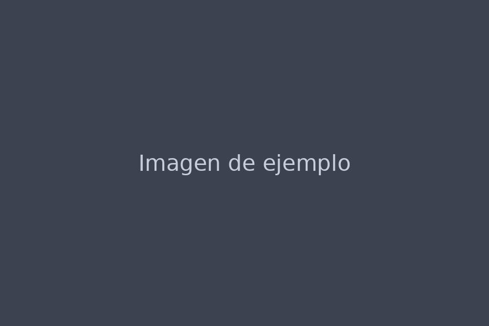

Richard Oswaldo Jamaica lasso
Kukkiwon IV Dan
Federación Colombiana Maestro
Certificación Kukkiwon (World Taekwondo Headquarters)
Federación Colombiana de Taekwondo
Richard Oswaldo Jamaica Lasso es profesional en Entrenamiento Deportivo, especialista en Pedagogía y Docencia, cinturón negro de Taekwondo por más de una década y practicante activo de este deporte durante más de veinte años. Su experiencia deportiva y académica le ha permitido consolidar procesos de formación enfocados no solo en el desarrollo físico y técnico, sino también en el crecimiento humano de sus estudiantes. Promueve el saber, el ser y el hacer como pilares fundamentales de la formación integral, fortaleciendo valores como la disciplina, el respeto, la perseverancia y el liderazgo dentro y fuera del área de entrenamiento.